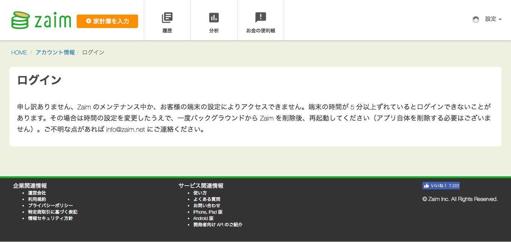
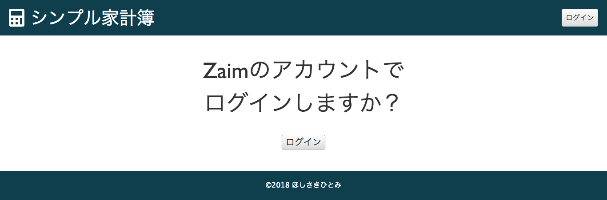
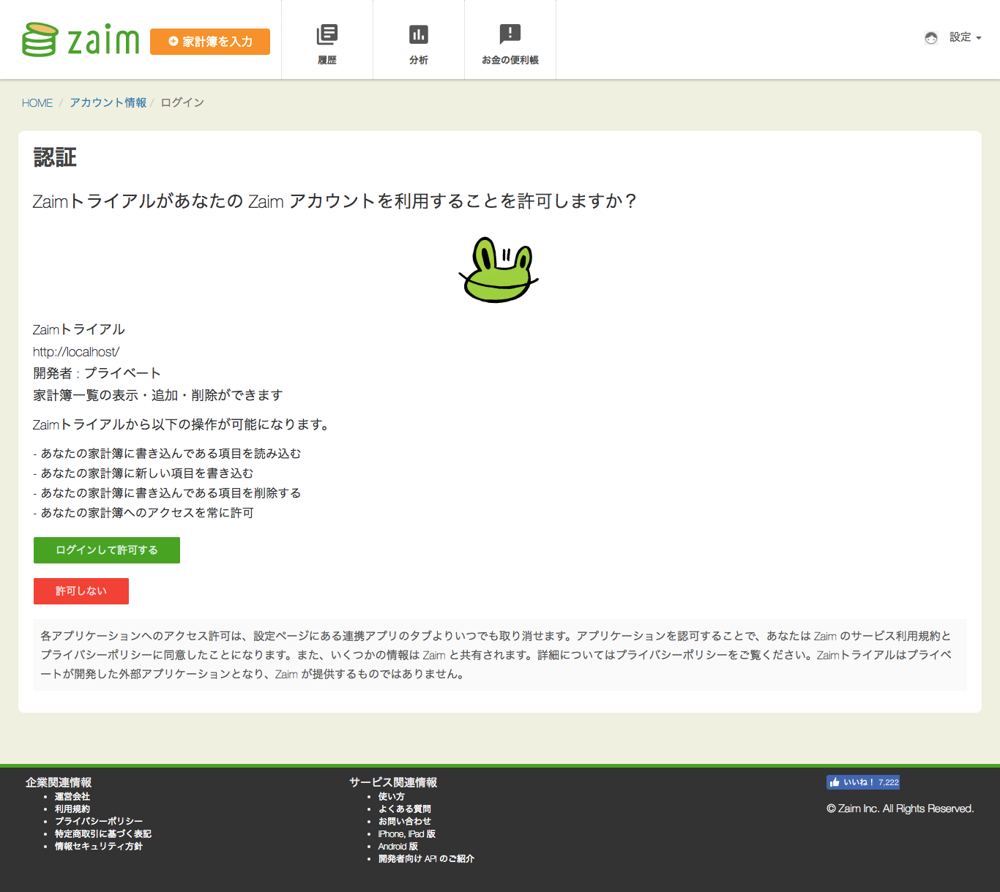
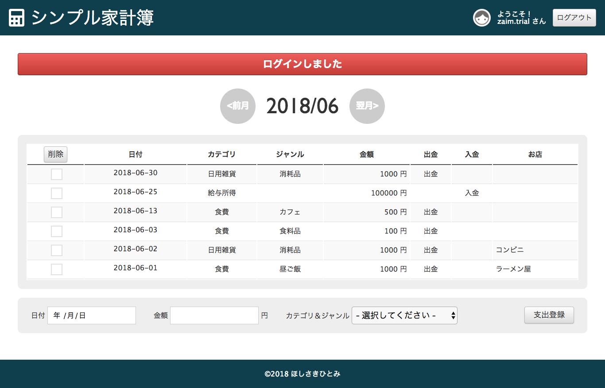
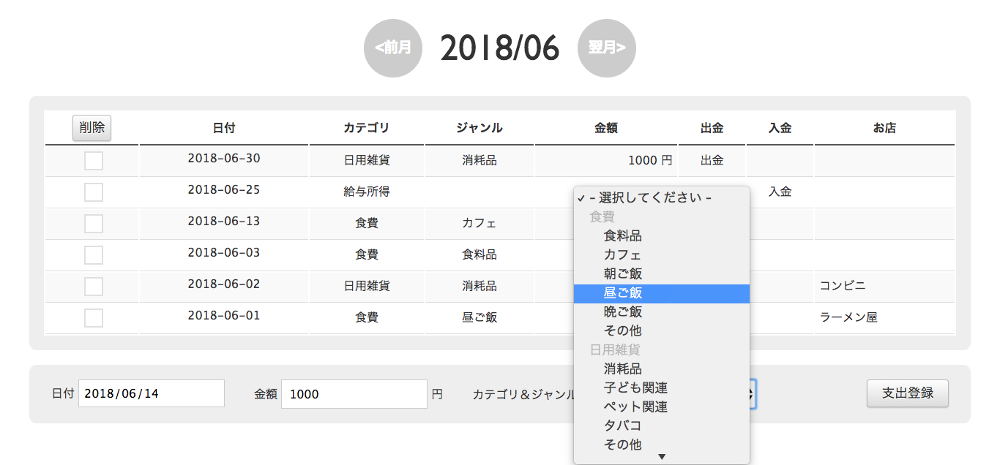
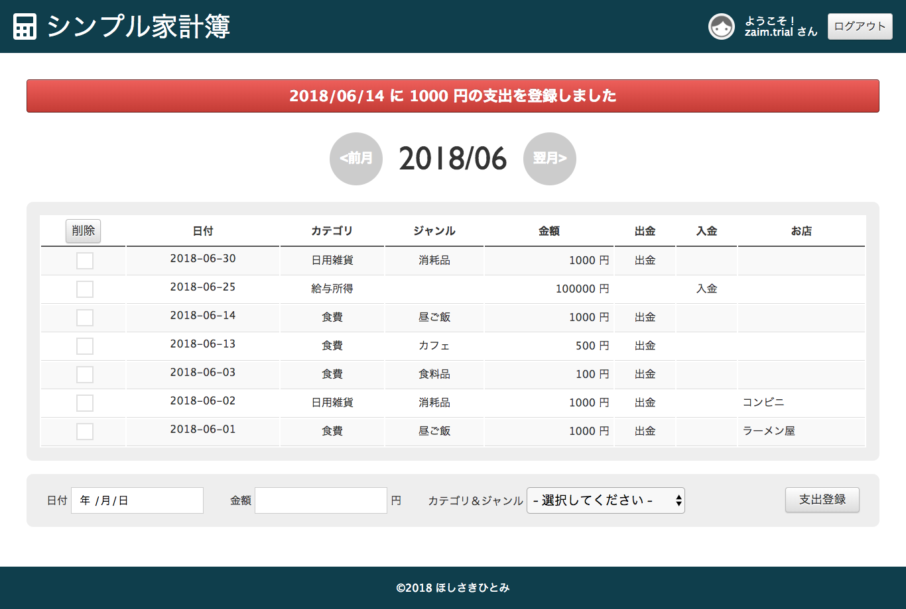
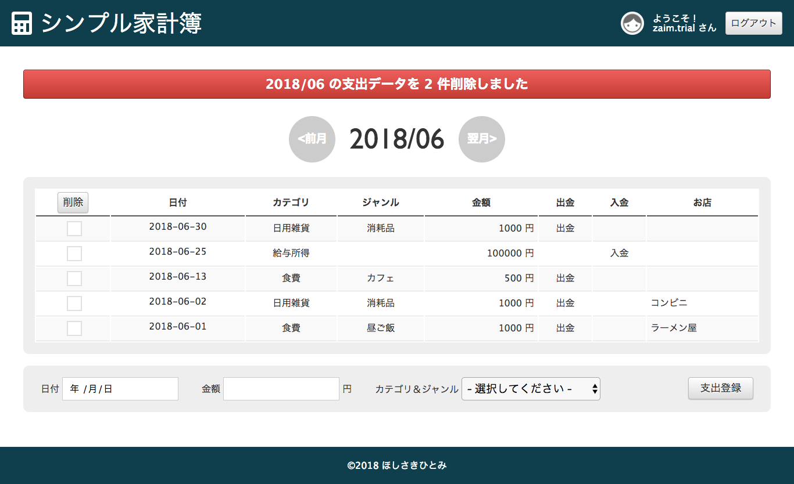

TRIAL1
開発内容
Zaim API を使ったWebアプリケーション。
開発にかかった時間
APIとプログラムを直接触るようになってからは15時間くらい？
その前にAnsibleやAWS、CakePHPについて学ぶ時間も別に作りました。
合計30時間くらいでしょうか。
工夫した点
1. actionを細かく分けたこと。
シンプルな機能しかまだつけていませんが、
いくらでも機能を追加していけそうです。
拡張性を持たせるためにactionは極力小さくしました。
2. Qiitaにまとめながら作業を進めたこと。
プログラムと直接は関係ありませんが、
今回は一気に勉強することがたくさんあったので
あとで混乱したり忘れたりして困ることが予想できました。
Qiitaにメモを残しながら祖業を進めたので、
同じところにハマり続けることなく思考できました。
動作確認方法の説明書
お詫び
ローカルでは動いているのですが、仮想サーバーやAWSにUPすると
タイムゾーンの設定がうまくいってないみたいで、ログイン認証から先に進めません。

AWS
http://13.114.178.205/
こちらにアクセスするだけで動作確認できる…
予定だったのですが、申し訳ありません。
仮想サーバー
VirtualBox + Vagrant + Ansible で環境構築しました。
GitHubからソースをダウンロードしてくるかクローンをお願いします。
https://github.com/HitomiHoshisaki/zaim_trial
# バーチャルボックスのバージョンを調べる。
$VBoxManage -v
# バーチャルボックスがなければ、最新版(5.2)をダウンロード、インストール。
# 参考）https://www.virtualbox.org/
# vagrant が入っているか確認。
$ vagrant --version
# 入っていなければ、Vagrantの最新版(2.1.1)をダウンロード。
# 参考）https://www.vagrantup.com/
# ディレクトリに移動、仮想サーバー立ち上げ。
$ cd /path/to/trial1/
$ vagrant up
# ssh接続できるか確認。
$ vagrant ssh
exit
# ansibleが入っているか確認。
$ ansible --version
# ansibleが入っていなければ、pipをインストール。
$ sudo easy_install pip
# pipでAnsible最新版(2.5.4)をインストール。
$ sudo pip install ansible
$ playbookを実行。パスワード聞かれたらvagrant(2回)。
$ ansible-playbook playbook.yml
http://192.168.33.10/
こちらにアクセスすれば動作確認できる…
予定だったのですが、申し訳ありません。
スクショ





